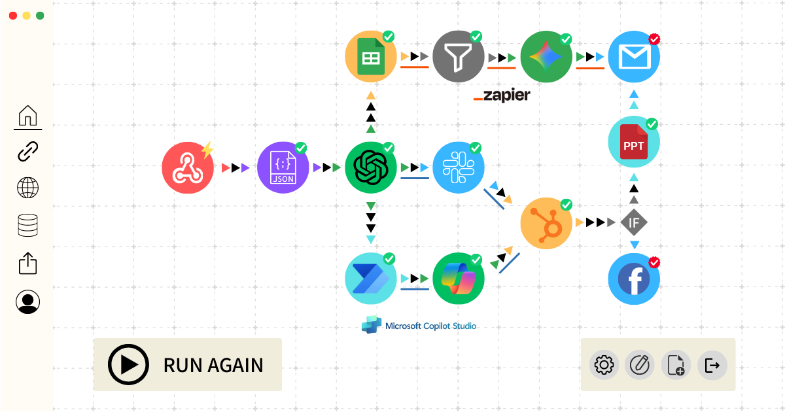

診断結果を計算中...
業務改善ポテンシャルの診断結果
診断レベルの詳細解説を読み込み中...
Haru Automation のご紹介
生成AIとあらゆるツールを連携させ、"即成果が出る"自動化を実現します。
Haru Automationは、ChatGPTやGeminiなどの生成AIと、ZapierやDify、PowerAutomateといった各種効率化ツールを最適に組み合わせ、お客様専用の業務改善フローを構築します。
AI単体では実現できなかった、複雑な業務の自動化や品質向上まで、一気通貫でご支援。「面倒」をなくし、企業のコア業務に集中できる環境を創り出します。
高額な初期投資は不要です。まずは29,800円の「お試しプラン」で、業務の一つを自動化することによるインパクトを体感してください。効果にご納得いただけた上で、本格的なご支援へとステップアップが可能です。
導入後の運用も「丸投げOK」のサポート体制で、安心してご利用いただけます。
